1060G90 DIESEL INJECTION WIRING HARNESS - R R
- Path
- Procedures > 10 ENGINE UNIT > 1060 DIESEL INJECTION SYSTEM > 1060G PRESSURE PUMP ELECTRIC CONTROL > 1060G90 DIESEL INJECTION WIRING HARNESS - R R
- Kind
- repair procedure (removal / refitting; the operation number is the code)
- Applies to
- engines: 1.9 JTD 16V; all production periods
- Interactive page
- https://sloeber94.github.io/elrnDB-aGt/en/#/125001062
Applies to: engines: 1.9 JTD 16V; all production periods
 Removing
Removing
 Refitting
RefittingPosition the vehicle on the ramp
Ensure that the ignition key is in the OFF position, then disconnect the negative battery terminal (-).
Name | Connector | |
|---|---|---|
- | Battery | See A1B BATTERY ( BATTERY NEGATIVE ) |
Proceed with removal
- 1016A10 sound-proofing cover - r + r
Proceed with removal
Proceed with removal
Op. 7055B54 UNDER-ENGINE GUARD - R R
1. Disconnect the electrical connection from the engine oil pressure warning light switch.
2. Disconnect the electrical connection for the engine oil level sensor.
Op. 1076B70 EXHAUST PIPE BETWEEN PRE-CATALYTIC CONVERTER AND CATALYTIC CONVERTER - R R
3. Disconnect the electrical connection for the rpm sensor.
Name | Connector | |
|---|---|---|
1 | Engine oil pressure sensor | See K30 ENGINE OIL PRESSURE SENSOR SWITCH ( CONNECTORS ) |
Name | Connector | |
|---|---|---|
2 | Engine oil level sensor | See K32 ENGINE OIL LEVEL SENSOR |
Name | Connector | |
|---|---|---|
3 | Rpm sensor | See K46 RPM SENSOR ( CONNECTORS ) |
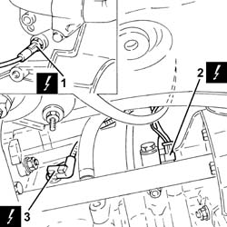
Applies to: engines: 1.9 JTD 16V; all production periods
1. Disconnect the earth lead from the alternator.
Name | Connector | |
|---|---|---|
1 | Alternator | See A10 ALTERNATOR |
2. Disconnect the earth lead from the starter motor.
Name | Connector | |
|---|---|---|
2 | Starter' motor | See A20 STARTER' MOTOR |
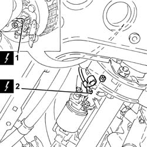
Applies to: engines: 1.9 JTD 16V; all production periods
1. Disconnect the electrical connection from the solenoid on the vacuum tank.
Name | Connector | |
|---|---|---|
1 | Butterfly casing solenoid valve | See L62 BUTTERFLY CASING SOLENOID VALVE |
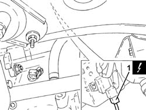
Applies to: engines: 1.9 JTD 16V; all production periods
1. Disconnect the electrical connection from the turbocharger vane actuator solenoid.
Name | Connector | |
|---|---|---|
1 | Variable geometry control solenoid | See L15 VARIABLE GEOMETRY CONTROL SOLENOID ( CONNECTORS ) |
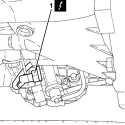
Applies to: engines: 1.9 JTD 16V; all production periods
1. Disconnect the electrical connection from the air flow meter.
Name | Connector | |
|---|---|---|
1 | Air flow meter | See K41 AIR FLOW METER ( FRONT ) |
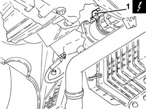
Applies to: engines: 1.9 JTD 16V; all production periods
1. Disconnect the electrical connection from the engine coolant temperature sensor and release the wiring from the bands.
Name | Connector | |
|---|---|---|
1 | Engine temperature sender unit | See K36 ENGINE TEMPERATURE SENDER UNIT ( CONNECTORS ) |
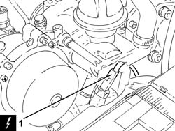
Applies to: engines: 1.9 JTD 16V; all production periods
1. Disconnect the electrical connections from the injectors.
Name | Connector | |
|---|---|---|
1 | Injector | See N70 INJECTOR |
2. Disconnect the electrical connection from the cam angle sensor.
Name | Connector | |
|---|---|---|
2 | Timing sensor. | See K47 TIMING SENSOR. ( CONNECTORS ) |
3. Disconnect the electrical connection for the air conditioning compressor.
Name | Connector | |
|---|---|---|
3 | Air conditioning compressor engagement electro-magnet | See L20 AIR CONDITIONING COMPRESSOR ENGAGEMENT ELECTRO-MAGNET ( CONNECTORS ) |
Release the electrical wiring from the band on the timing cover.
4. Undo the bolts fastening the cable duct and move the electrical wiring aside.
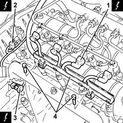
Applies to: engines: 1.9 JTD 16V; all production periods
1. Disconnect the electrical connections from the heater plugs.
Name | Connector | |
|---|---|---|
1 | Heater plug | See A40 HEATER PLUGS (CYL. 1) |
2. Disconnect the electrical connection from the fuel pressure sensor.
Name | Connector | |
|---|---|---|
2 | Fuel pressure sensor | See K83 FUEL PRESSURE SENSOR |
3. Disconnect the electrical connection from the excess pressure sensor.
Name | Connector | |
|---|---|---|
3 | Turbocharging sensor | See K82 TURBOCHARGING SENSOR |
4. Disconnect the electrical connection from the E.G.R. valve.
Name | Connector | |
|---|---|---|
4 | EGR solenoid | See L30 EGR SOLENOID |
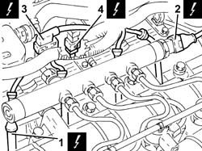
Applies to: engines: 1.9 JTD 16V; all production periods
1. Disconnect the electrical connection from the fuel pressure regulator.
Name | Connector | |
|---|---|---|
1 | Fuel pressure regulator | See N77 FUEL PRESSURE REGULATOR ( CONNECTORS ) |
2. Disconnect the rapid attachment for the fuel return pipe to the tank, fuel return manifold pipe side.
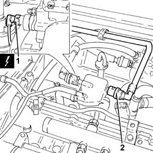
Applies to: engines: 1.9 JTD 16V; all production periods
1. Undo the nuts (1a) and lift up the heater plugs control unit (1b) as much as necessary.
2. Disconnect the electrical connection from the pre-heating control unit.
Name | Connector | |
|---|---|---|
2 | Plug preheating control unit | See M15 PLUG PREHEATING CONTROL UNIT |
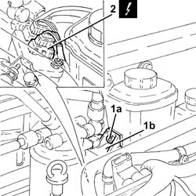
Applies to: engines: 1.9 JTD 16V; all production periods
Proceed with removal
Op. 1008C10 POWER UNIT UPPER REACTION LINK R R
1. Connect the electrical connections to the diesel electronic injection control unit.
2. Disconnect the front engine coupling.
Name | Connector | |
|---|---|---|
1 | Engine management control unit | See M10A ENGINE MANAGEMENT CONTROL UNIT ( FRONT ) |
Name | Connector | |
|---|---|---|
2 | Front/engine connection | See D4 FRONT/ENGINE CONNECTION ( CONNECTORS ) |
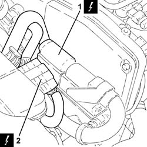
Applies to: engines: 1.9 JTD 16V; all production periods
1. Release the spark plug cable loom from the securing bands and remove it.
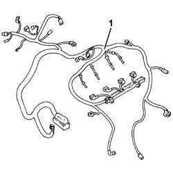
Applies to: engines: 1.9 JTD 16V; all production periods
Refitting
RemovingPlace the cable loom back in its housing and fix it using the bands.
Connect the front engine coupling.
Connect the electrical connection to the diesel electronic injection control unit.
Connect the rapid attachment for the fuel return pipe to the tank, fuel return manifold pipe side.
Proceed with refitting
Op. 1008C10 POWER UNIT UPPER REACTION LINK R R.
Connect the electrical connection to the pre-heating control unit.
Place the heater plugs control unit back in its housing and secure it using the nuts.
Connect the electrical connection to the fuel pressure regulator.
Connect the electrical connection to the E.G.R. valve.
Connect the electrical connection to the excess pressure sensor.
Connect the electrical connection to the fuel pressure sensor.
Connect the electrical connections to the heater plugs.
Tighten the cable duct fixing bolts.
Fasten the electrical wiring to the band on the timing cover.
Connect the electrical connection to the air conditioner compressor.
Connect the electrical connection to the cam angle sensor
Connect the electrical connections to the injectors.
Connect the electrical connection to the engine coolant temperature sensor and fasten the wiring to the bands.
Connect the electrical connection to the air flow meter.
Connect the electrical connection to the turbocharger vane actuator solenoid.
Connect the electrical connection to the solenoid on the vacuum tank.
Connect the earth lead to the starter motor.
Connect the earth lead to the alternator.
Connect the electrical connection for the rpm sensor.
Connect the electrical connection for the engine oil level sensor.
Connect the electrical connection to the engine oil pressure warning light switch.
Proceed with refitting
Op. 1076B70 EXHAUST PIPE BETWEEN PRE-CATALYTIC CONVERTER AND CATALYTIC CONVERTER - R R.
Proceed with refitting
Op. 7055B54 UNDER-ENGINE GUARD - R R.
Proceed with refitting
- 1016A10 sound-proofing cover - r + r
.
Connect the negative (-) battery terminal
Remove the car from the ramps.